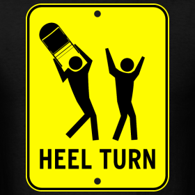

The 7 Secrets of the Heel Turn 
18 April 2016
The Heel Turn was invented by Josephine Bradley in the early 20th century, and today it is universally detested, kind of like mosquitoes. If you are a Lady, Heel Turns will plague your Foxtrot, add unwanted difficulty to your Waltz, and even show up in Quickstep and Tango. As a Man with flatter shoes and a different technique, Heel Turns are less problematic, but wouldn't it be great if we just got rid of them altogether? Well, that's not going to happen, but they can be made a lot easier once you understand these important mechanics! In any case, just be thankful that Heel Turn in Ballroom Dancing doesn't mean what it means in Professional Wrestling, where it apparently has something to do with whacking people with a metal chair.
1. Draw your Heel Back with Pressure
On a regular step in Waltz, you will step back onto the foot and swing your free leg through, but not so on a Heel Turn. As a Lady dancing a Heel Turn, you should feel a strong pressure - almost split weight actually - between the heel of your front foot and the ball of your back foot. Keep this pressure the entire duration of the step until your feet close. This is the number one reason Ladies are often off balance during their Heel Turns, and paying attention to it is all it takes to fix it.
2. Close the Foot Slightly Back
 Your free foot should not close right beside the standing foot, but slightly behind it. Try this experiment. Start backing DC and close your feet so that the left foot is slightly back, and the heels are in line down LOD. Now keep the heels where they are, and turn the feet to the left, keeping the balls of the feet together. Somewhere around pointing DC, your feet will lock into position, and now your right foot is slightly behind your left foot.Getting the feel for exactly how much behind you should take your free foot will take a bit of practice, because it's different for everyone depending on the size and shape of your feet and shoes.
Your free foot should not close right beside the standing foot, but slightly behind it. Try this experiment. Start backing DC and close your feet so that the left foot is slightly back, and the heels are in line down LOD. Now keep the heels where they are, and turn the feet to the left, keeping the balls of the feet together. Somewhere around pointing DC, your feet will lock into position, and now your right foot is slightly behind your left foot.Getting the feel for exactly how much behind you should take your free foot will take a bit of practice, because it's different for everyone depending on the size and shape of your feet and shoes.
3. Counterbalance
One of the main problems during the Heel Turn is that the Man pulls the Lady through, causing her to step forward as opposed to closing her feet. For all you guys reading, step 2 of a Foxtrot Reverse Turn or Telemark or what have you should feel like it is actually going against LOD (yes you read that right). For all you Ladies out there, you can help your Man do this by providing counterbalance through your head weight. As you dance the Heel Turn, feel that your head resists movement down LOD, which will not only help to keep you on balance, but also create a beautiful blossoming shape.
4. Don't Rise on Step 2
One huge mistake Ladies make when dancing a Heel Turn is the exit from it, where they rise on step 2 and then plop down into the next step. Yes, your heel should release from the floor on step 2, but that isn't because you are going up, but because you are going forward. Because of this, you don't actually even have to think about going up onto the toe, because the last time I checked the foot naturally releases the heel when you step forward. If your head actually gets any closer to the ceiling, you're doing it wrong. By not going up, you will notice your steps become a lot smoother, a lot more connected to your partner, and you have the ability to take larger steps with comfort.
5. If All Else Fails, just Look Pretty
Sometimes the floor was slippery, and sometimes the lead wasn't great, but the judges don't see those things. What they do see is whether or not your feet did something ugly, so if all else fails, just look pretty. This means that if you have to swivel on the ball of the foot after making the Heel Turn in order to make more turn, that's fine, just keep the balls of your feet closed, keep your posture, and keep your smile. Don't let anyone know something went wrong, and chances are nobody will notice.
6. The Heel Close
Tango and Paso Doble use a special type of Heel Turn, known as the Heel Close. If you've been dancing real Heel Turns all this time, you'll feel like this is so easy it must be cheating. Instead of drawing your feet together and closing one foot slightly back with the balls of the feet snugly closed, all you do is close one heel to the other, with no pivotting on the heel, and no closing of the balls of the foot. Let's take as an example the Tango Oversway, since steps 1-3 are like an Open Telemark. As the Lady, take step 1 backing DC. On step 2, close the left heel to the right heel, with the left foot pointing down LOD and the right foot still pointing DW against LOD. BAM - you've danced a Heel Close! It's that easy.
7. The Man's Heel Turn
The Man will dance Heel Turns in the Impetus, but his technique is a bit different from the Lady's. While the Lady rises into her Heel Turn, the Man does not rise until he leaves the foot (N.B. This is like point 4. Although he does extend the foot and the leg, he doesn't rise into the air so much as he has the feeling of rising as he progresses down the floor). This means that there should be no Rise at all on step 1 of the Impetus. When the Lady dances her Heel Turn, she doesn't know it's coming, so the way the Man rises allows helps her close her feet. Here, the Man knows it's coming, and he can close his feet all on his own. The turn is made while down, and then the couple moves smoothly into the next step.
There you have the seven secrets to the Heel Turn! In truth, the Heel Turn (and dancing in general) has a million secrets that you can uncover through practice, so go out there and let us know if you find any more!